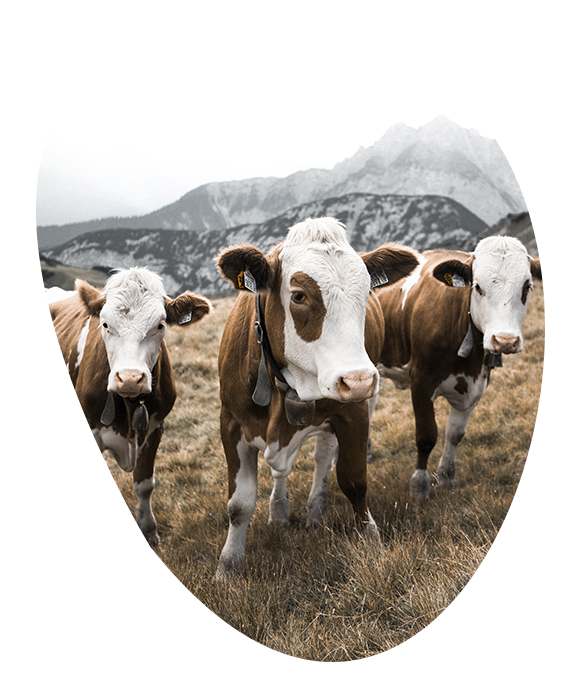

Свежее фермерское молоко
100% натуральный стостав
Оформите подписку и получайте вкусные и полезные
завтраки каждый день со скидкой 10%
Оформите подписку и получайте вкусные и полезные
завтраки каждый день со скидкой 10%
|
Наша ферма находиться в одном
Наши коровы самые счастливые! |
 |
Проверка качества на каждом
Чтобы повысить качество и |

|
ОтзывыОтличное качество и вкус Вкусный и полезный завтрак — залог продуктивного |
АДРЕС
Социалистическая улица 2/30
Санкт-Петербург, Россия, 191002
ТЕЛЕФОН
800-877-14-14
8 812-877-14-13
ПОЧТА
moloko@ferma.ru
 Экологически чистый
продукт
Экологически чистый
продукт